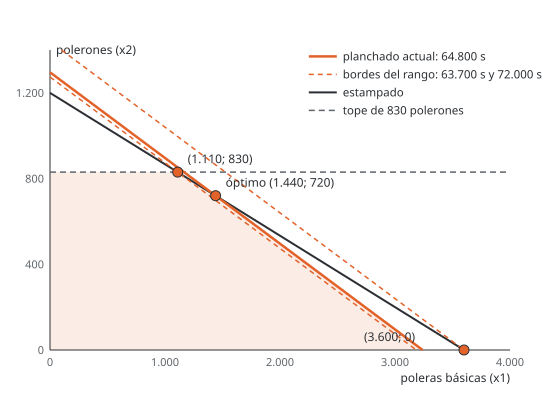

![Camilo Merino]()
Unidad 12 · Análisis de sensibilidad y precios sombra
Qué vas a poder hacer. Calcular hasta dónde puede moverse un lado derecho sin que su precio sombra deje de valer, y hasta dónde un margen sin que cambie el plan; decir cuánto tiene que mejorar un producto para entrar; evaluar un producto nuevo sin volver a resolver; leer el informe de sensibilidad de CPLEX y de Solver, y decidir con eso si conviene comprar un recurso.
Lo que necesitas antes. La tabla final del simplex y la matriz \(B^{-1}\) (unidad 8); el precio sombra como variable dual (unidad 10); la holgura complementaria y el costo reducido (unidad 11).
Tiempo. Unas 4,5 horas: 1,5 de lectura con el ejemplo y 3 de práctica.
1. La idea
Un modelo se resuelve con datos que nadie conoce exacto: la demanda es un pronóstico, el margen depende de un precio que se negocia, las horas disponibles dependen de quién falte. El análisis de sensibilidad responde, sin volver a resolver, dos preguntas:
- ¿Cuánto vale una unidad más de un recurso, y hasta dónde vale eso? (rango del lado derecho)
- ¿Cuánto puede cambiar un margen o un costo sin que cambie la decisión? (rango del coeficiente)
Las dos respuestas salen de la misma idea: la base óptima (qué variables son básicas) sigue siendo óptima mientras se cumplan sus dos condiciones. Una es la factibilidad, \(x_B = B^{-1}b \ge 0\); la otra es la optimalidad, que todos los costos reducidos tengan el signo correcto. Cambiar \(b\) toca solo la primera; cambiar \(c\) toca solo la segunda.
Si el dato se sale del rango, la base cambia y hay que volver a resolver (eso es el análisis postóptimo). El rango es justamente la frontera hasta donde no hace falta.
2. Rango del lado derecho
En dos dimensiones
Mover el lado derecho de una restricción activa desplaza su recta en paralelo. El vértice óptimo corre a lo largo de la otra restricción activa y el margen cambia a razón de su precio sombra. Eso dura hasta que el vértice choca con otra restricción (o con un eje): ahí la base cambia y el precio sombra también.

En la versión de dos prendas de Estampa Sur (unidad 2), el óptimo es 1.440 poleras y 720 polerones, donde se cruzan el estampado y el planchado. Si el planchado cambia, el vértice se mueve por la recta del estampado. Bajando, choca con el tope de 830 polerones en (1.110; 830), que usa 63.700 s de planchado. Subiendo, llega al eje en (3.600; 0), que usa 72.000 s. Entre 63.700 y 72.000 s el precio sombra del planchado de esa versión no cambia.
En general
Si \(b_i\) pasa a \(b_i + \Delta\), las variables básicas pasan a
\[x_B(\Delta) = B^{-1}(b + \Delta e_i) = x_B + \Delta \cdot \big(\text{columna } i \text{ de } B^{-1}\big)\]
y la base sigue factible mientras todas sean no negativas. Cada fila \(k\) con coeficiente positivo en esa columna pone un piso a \(\Delta\), y cada una con coeficiente negativo, un techo:
\[\max_{k:\ \beta_{ki} > 0} \left(-\frac{x_{B_k}}{\beta_{ki}}\right) \ \le\ \Delta\ \le\ \min_{k:\ \beta_{ki} < 0} \left(-\frac{x_{B_k}}{\beta_{ki}}\right)\]
donde \(\beta_{ki}\) es el elemento \((k,i)\) de \(B^{-1}\). En la tabla final del simplex, \(B^{-1}\) está en las columnas de las holguras.
Dentro del rango:
- El precio sombra no cambia y el objetivo cambia en \(y_i \cdot \Delta\).
- La solución sí cambia (las básicas se mueven), pero la lista de básicas es la misma.
- En una restricción inactiva (\(\le\) con holgura \(s_i\)) el precio es cero, la solución no cambia, el aumento permitido es ilimitado y la disminución permitida es la holgura.
Por qué el precio sombra es constante en el rango. Con la base fija, \(z = c_B B^{-1} b = y\,b\): el objetivo es lineal en \(b\) con pendiente \(y\). Lo único que puede romper la fórmula es que una básica se haga negativa, y eso es justo lo que mide el rango.
3. Rango de los coeficientes del objetivo
Cambiar \(c_j\) no mueve la región factible: solo gira las curvas de nivel del objetivo. La solución sigue siendo la misma mientras siga siendo la mejor entre sus vértices vecinos.
Variable no básica (un producto que no se fabrica). Su costo reducido es \(d_j = c_j - a_j^{T}y\): margen menos lo que valen sus recursos. En un máximo, \(d_j \le 0\). Si su margen sube, solo cambia su propio \(d_j\). Entonces:
\[c_j \text{ puede subir hasta } a_j^{T}y = c_j - d_j \quad\text{y bajar sin límite}\]
El costo reducido es cuánto tiene que mejorar el producto para entrar. Al pasar ese umbral, entra a la base y el plan cambia.
Variable básica (un producto que se fabrica). Su margen está en \(c_B\), así que cambia todos los costos reducidos: si \(c_k\) pasa a \(c_k + \delta\), cada no básica \(q\) queda con
\[d_q(\delta) = d_q - \delta\,\alpha_{kq}\]
donde \(\alpha_{kq}\) es el número de la fila de \(x_k\) y la columna \(q\) en la tabla final. En un máximo se exige \(d_q(\delta) \le 0\) para todas las \(q\): las que tienen \(\alpha_{kq} > 0\) ponen un piso a \(\delta\) y las que tienen \(\alpha_{kq} < 0\), un techo. En un mínimo los signos se invierten (\(d_q \ge 0\)).
En dos dimensiones es más corto: la pendiente del objetivo tiene que quedar entre las pendientes de las dos restricciones activas.
Dentro del rango, la solución no cambia; el objetivo sí, en \(\delta \cdot x_k\).
4. Un producto nuevo
Para evaluar un producto que no estaba en el modelo, con consumo \(a_{\text{nuevo}}\) y margen \(c_{\text{nuevo}}\), se valoriza con los precios sombra actuales:
\[d_{\text{nuevo}} = c_{\text{nuevo}} - a_{\text{nuevo}}^{T}\,y\]
Si \(d_{\text{nuevo}} \le 0\) (en un máximo), sus recursos valen más de lo que deja y el plan no cambia. Si es positivo, conviene: entra a la base y hay que volver a resolver para saber cuánto producir. Es holgura complementaria aplicada a una columna que todavía no existe.
5. Varios cambios a la vez · regla del 100 %
Los rangos de un informe valen uno a la vez. Si cambian varios lados derechos juntos, la regla del 100 % da una condición suficiente: se suma, para cada cambio, qué fracción de su margen permitido usa (el aumento permitido si sube, la disminución permitida si baja).
\[\sum_i \frac{|\Delta_i|}{\text{permitido}_i} \le 1 \ \Rightarrow\ \text{la base sigue siendo óptima}\]
Lo mismo vale para varios coeficientes del objetivo. Si la suma pasa de 100 %, la regla no dice nada: la base puede seguir o no, y hay que comprobarlo (ejercicio 12.9).
6. Leer el informe del software
CPLEX y OPL. En CPLEX Studio, después de resolver, la vista de la solución muestra para cada
restricción su holgura (slack) y su dual (dual), y para cada variable su costo reducido
(reducedCost); desde un bloque execute se imprimen con Restriccion.dual, Restriccion.slack y
x.reducedCost. Los rangos no aparecen ahí: hay que pedirlos aparte. Dos caminos:
- Exportar el modelo y pedirle los rangos al optimizador interactivo de CPLEX:
oplrun -e modelo.lp modelo.mod datos.dat, luegocplex,read modelo.lp,optimize,display sensitivity rhs -ydisplay sensitivity obj -. - Escribir el «código extra» en un bloque
mainque cambia el dato, vuelve a resolver y anota cuándo cambia el precio (el caso integrador lo hace con el planchado).
Solver de Excel. Al terminar, en el mensaje de solución encontrada se pide el informe de sensibilidad (en Excel en español aparece como informe de «Confidencialidad»). Trae dos tablas: las celdas variables (valor final, costo reducido, coeficiente objetivo, aumento y reducción permisibles) y las restricciones (valor final, precio sombra, lado derecho, aumento y reducción permisibles). Un permisible de 1E+30 significa «sin límite». El método tiene que ser Simplex LP: con GRG no lineal el informe no trae rangos.
El signo. Los dos programas informan el precio sombra como \(\partial z / \partial b_i\): cuánto cambia el objetivo si el lado derecho sube en uno. En un máximo, un recurso escaso tiene precio positivo (el margen sube). En un mínimo, una exigencia \(\ge\) activa tiene precio positivo porque el costo sube: no es una ganancia. Leer el precio de un mínimo como si fuera de un máximo es el error de signo más frecuente. Lo mismo con el costo reducido: en un máximo, el de un producto fuera del plan es negativo; en un mínimo, positivo.
Cuándo NO aplica tal cual
- Fuera del rango el precio sombra deja de valer. Con un recurso de más, el precio siguiente es menor o igual (rendimientos decrecientes, en un máximo); con uno de menos, mayor o igual (12.1 y 12.10).
- Solución degenerada: los rangos pueden salir con un permisible cero y el precio sombra depende de la dirección del cambio (unidad 11, ejercicio 11.9).
- Óptimos alternativos: un costo reducido cero en una variable fuera de la base avisa que el informe muestra una de varias soluciones.
- Modelos enteros: el informe de sensibilidad de un modelo entero no tiene esta interpretación.
7. Ejemplo resuelto · La tostaduría vuelve
La tostaduría de la unidad 11 tuesta 250 kg de espresso, nada de filtro y 100 kg de descafeinado, con margen $1.560.000. Recursos: 2.400 minutos de tostadora, 1.000 de envasadora y 350 bolsas. Precios sombra: $300 por minuto de tostadora, $0 por minuto de envasadora, $2.400 por bolsa.
El dueño pregunta cuatro cosas. ¿Cuántas bolsas más le conviene conseguir a $2.400 de valor? ¿Qué pasa si arrienda 300 minutos más de tostadora? ¿Cuánto puede bajar el margen del espresso sin cambiar el plan? Y un cliente le ofrece una mezcla orgánica: ¿la agrega?
Paso 1 · La tabla final. El simplex con fracciones (modelo con \(s_1, s_2, s_3\) holguras de tostadora, envasadora y bolsas) termina en:
| Básica | \(x_1\) | \(x_2\) | \(x_3\) | \(s_1\) | \(s_2\) | \(s_3\) | Valor |
|---|---|---|---|---|---|---|---|
| \(x_1\) | 1 | 5/3 | 0 | −1/3 | 0 | 3 | 250 |
| \(x_3\) | 0 | −2/3 | 1 | 1/3 | 0 | −2 | 100 |
| \(s_2\) | 0 | −5/3 | 0 | 1/3 | 1 | −5 | 50 |
| \(c_j - z_j\) | 0 | −150 | 0 | −300 | 0 | −2.400 | \(z = 1.560.000\) |
Las columnas de \(s_1\), \(s_2\) y \(s_3\) son \(B^{-1}\). La fila de abajo trae los costos reducidos y, con signo cambiado bajo las holguras, los precios sombra.
Paso 2 · Rangos de los lados derechos. Para las bolsas se usa la columna de \(s_3\), \((3;\ -2;\ -5)\):
\[250 + 3\Delta \ge 0 \qquad 100 - 2\Delta \ge 0 \qquad 50 - 5\Delta \ge 0\]
La primera da \(\Delta \ge -83{,}33\); la segunda, \(\Delta \le 50\); la tercera, \(\Delta \le 10\). Las bolsas pueden ir de 266,67 a 360. Para la tostadora, con la columna de \(s_1\), \((-1/3;\ 1/3;\ 1/3)\): de 2.250 a 3.150 minutos. La envasadora tiene 50 minutos de holgura: puede bajar a 950 y subir sin límite.
Paso 3 · Una nueva disponibilidad dentro del rango. Con 2.700 minutos de tostadora (\(\Delta = 300\), dentro del rango) no hace falta resolver:
\[x_B = (250;\ 100;\ 50) + 300\,(-1/3;\ 1/3;\ 1/3) = (150;\ 200;\ 150)\]
150 kg de espresso, 200 de descafeinado y 150 minutos de envasadora libres. El margen sube a \({1{.}560{.}000} + 300 \cdot 300 = 1{.}650{.}000\): $1.650.000.
Paso 4 · Rangos de los márgenes. El filtro no es básico: su margen puede subir hasta \({3{.}450} + 150 = 3{.}600\). El espresso es básico, en la fila de \(x_1\). Sus no básicas son \(x_2\), \(s_1\) y \(s_3\):
\[-150 - \tfrac{5}{3}\delta \le 0 \qquad -300 + \tfrac{1}{3}\delta \le 0 \qquad -2{.}400 - 3\delta \le 0\]
que dan \(\delta \ge -90\), \(\delta \le 900\) y \(\delta \ge -800\). El margen del espresso puede ir de 4.110 a 5.100. Con la fila de \(x_3\), el descafeinado puede ir de 4.200 a 5.325.
Paso 5 · La mezcla orgánica. Usa 4 minutos de tostadora, 2 de envasadora y una bolsa por kilo, y
deja $3.700. A precios sombra, sus recursos valen \(4(300) + 2(0) + 1(2{.}400) = 3{.}600\): $3.600. Su
costo reducido es \(+100\), así que conviene. Corriendo el mismo u11_mezcla.mod con
u12_tostaduria_organico.dat (el modelo no cambia, solo los datos), el nuevo óptimo es 0 kg de
espresso, 0 de filtro, 200 de descafeinado y 150 de orgánico, con margen $1.575.000, y los precios
pasan a 280 por minuto de tostadora y 2.580 por bolsa.
Paso 6 · Lo mismo en el informe de CPLEX. La tabla de rangos que se calculó a mano:
| Restricción | Precio sombra | Desde | Actual | Hasta |
|---|---|---|---|---|
| Tostadora (min) | 300 | 2.250 | 2.400 | 3.150 |
| Envasadora (min) | 0 | 950 | 1.000 | sin límite |
| Bolsas | 2.400 | 266,67 | 350 | 360 |
| Variable | Costo reducido | Desde | Actual | Hasta |
|---|---|---|---|---|
| Espresso | 0 | 4.110 | 4.200 | 5.100 |
| Filtro | −150 | sin límite | 3.450 | 3.600 |
| Descafeinado | 0 | 4.200 | 5.100 | 5.325 |
y lo que entrega el optimizador interactivo a partir del modelo que exporta OPL:
Constraint Name Dual Price Down Current Up
Capacidad("tostadora") 300.0000 2250.0000 2400.0000 3150.0000
Capacidad("envasadora") zero 950.0000 1000.0000 +infinity
Capacidad("bolsas") 2400.0000 266.6667 350.0000 360.0000
Variable Name Reduced Cost Down Current Up
x("espresso") zero 4110.0000 4200.0000 5100.0000
x("filtro") -150.0000 -infinity 3450.0000 3600.0000
x("descafeinado") zero 4200.0000 5100.0000 5325.0000
Cómo se lee.
- Una bolsa más vale $2.400, pero solo 10 más: con 360 bolsas la envasadora se copa y el precio de la bolsa cae. Conseguir 50 bolsas extra a ese valor sería un error de cálculo.
- La tostadora vale $300 el minuto por 750 minutos más (12,5 horas): si arrendarla cuesta menos, conviene.
- El plan aguanta que el margen del espresso baje 90 pesos por kilo o suba 900: no hay que rehacerlo por una variación normal del precio del grano.
- La mezcla orgánica entra porque deja 100 pesos más de lo que valen sus recursos. El dueño la agrega y reemplaza el espresso: el modelo le dice qué dejar de hacer, no solo qué agregar.
8. Errores típicos
| Error | Cómo evitarlo |
|---|---|
| Usar el precio sombra para un cambio fuera de su rango | Revisa el permisible antes de multiplicar; fuera de él, vuelve a resolver (12.1, 12.10) |
| Creer que dentro del rango del lado derecho la solución no cambia | Lo que no cambia es la base y el precio; los valores de las básicas sí se mueven (paso 3 del ejemplo) |
| Leer el precio sombra de un mínimo como ganancia | En un mínimo, un precio positivo es cuánto sube el costo si la exigencia sube en uno (12.8) |
| Calcular el rango de un coeficiente básico mirando solo su costo reducido | Un coeficiente básico mueve todos los costos reducidos: usa su fila de la tabla final (12.6) |
| Aplicar dos cambios del informe a la vez como si fueran independientes | Usa la regla del 100 %; si pasa de 100 %, comprueba resolviendo (12.9) |
| Comparar un precio por segundo con un costo por hora | Pasa los dos a la misma unidad antes de decidir (el caso: 1,5 $/s son $5.400 la hora) |
| Pedir el informe de Solver con el método GRG | El informe con rangos sale con Simplex LP |
9. Práctica
Diez ejercicios: 12.1 a 12.4 básicos, 12.5 a 12.8 intermedios, 12.9 y 12.10 de desafío. Varios retoman modelos de la unidad 11, ya resueltos; acá se les pregunta qué pasa si cambian los datos. Las pautas están en la sección 10.
12.1 · El informe de la imprenta (básico). La imprenta de etiquetas del ejercicio 11.4 pidió el informe de sensibilidad de Solver:
| Celda | Valor final | Costo reducido | Coeficiente objetivo | Aumento permisible | Reducción permisible |
|---|---|---|---|---|---|
| Etiqueta A | 185 | 0 | 40.000 | 60.000 | 10.000 |
| Etiqueta B | 135 | 0 | 100.000 | 60.000 | 60.000 |
| Etiqueta C | 0 | −60.000 | 80.000 | 60.000 | 1E+30 |
| Restricción | Valor final | Precio sombra | Lado derecho | Aumento permisible | Reducción permisible |
|---|---|---|---|---|---|
| Prensa (h) | 860 | 15.000 | 860 | 740 | 540 |
| Adhesivo (m²) | 640 | 0 | 1.000 | 1E+30 | 360 |
| Troquel (h) | 320 | 25.000 | 320 | 180 | 148 |
(a) Se consiguen 100 horas más de prensa: ¿cuál es el nuevo margen? (b) El troquel pierde 200 horas por una mantención: ¿se puede calcular el nuevo margen con el informe? ¿Qué se puede afirmar? (c) El margen de la etiqueta B baja $50.000: ¿cambia el plan? ¿Cuál es el nuevo margen? (d) ¿Qué margen necesitaría la etiqueta C para entrar? (e) ¿Qué significa el 1E+30 del adhesivo?
12.2 · Huerto: rango de la tierra (básico). Un huerto cerca de Chillán reparte su superficie entre arándano (\(x_1\), hectáreas) y frambuesa (\(x_2\)), con márgenes de $1.400.000 y $1.000.000 por hectárea. Dispone de 28 ha, 96 mil m³ de agua de riego (4 y 2 mil m³ por ha) y 90 jornadas de cosecha (2 y 4 por ha). El óptimo es 20 ha de arándano y 8 de frambuesa, con margen $36.000.000; tierra y agua están activas. (a) Calcula los precios sombra de la tierra y del agua. (b) Encuentra el rango de la tierra moviendo su recta hasta los vértices vecinos. (c) Un vecino le arrienda 2 ha: ¿cuál es el nuevo margen?
12.3 · Huerto: rango del margen del arándano (básico). Con el mismo huerto, ¿entre qué valores puede moverse el margen del arándano sin que cambie el plan? Usa las pendientes de las restricciones activas.
12.4 · Mermeladas: lo que le falta a la mora (básico). En la fábrica del ejercicio 11.2 la mora no se produce. (a) ¿Cuánto tiene que subir su margen para que entre? (b) Si un cliente paga un margen de $2.400 por caja de mora, ¿cuál es el nuevo plan y su margen?
12.5 · Quesería: rangos con la tabla final (intermedio). La quesería del ejercicio 11.5 (gauda, mantecoso y fresco, con holguras \(s_1\) de leche, \(s_2\) de cámara y \(s_3\) de envasado) termina el simplex en esta tabla:
| Básica | \(x_1\) | \(x_2\) | \(x_3\) | \(s_1\) | \(s_2\) | \(s_3\) | Valor |
|---|---|---|---|---|---|---|---|
| \(x_1\) | 1 | −1 | 0 | 0 | 1 | −1 | 40 |
| \(x_3\) | 0 | 3 | 1 | 0 | −1 | 2 | 220 |
| \(s_1\) | 0 | 1 | 0 | 1 | −1 | −2 | 140 |
| \(c_j - z_j\) | 0 | −200 | 0 | 0 | −700 | −1.200 | \(z = 522.000\) |
(a) Calcula el rango de las horas de cámara y de envasado. (b) Si se contrata media jornada más de envasado y hay 290 horas, ¿cuál es el nuevo plan y su margen, sin resolver de nuevo?
12.6 · Quesería: rango de los márgenes (intermedio). Con la misma tabla, calcula el rango del margen del gauda y del queso fresco. ¿Cuál de los dos es más sensible?
12.7 · Chocolatería: una caja nueva (intermedio). La chocolatería del ejercicio 11.8 evalúa una
caja degustación que usa 2 minutos de templado y 3 de envasado, deja $2.000 y se venderían a lo más
150. (a) Valorízala con los precios sombra actuales: ¿conviene? (b) Resuelve en OPL
(u12_mezcla_topes.mod con u12_chocolateria.dat) y explica qué deja de hacerse.
12.8 · Alimento: el informe de un mínimo (intermedio). La lechería del ejercicio 11.6 pidió el informe de Solver para su mezcla de menor costo:
| Celda | Valor final | Costo reducido | Coeficiente objetivo | Aumento permisible | Reducción permisible |
|---|---|---|---|---|---|
| Afrecho | 0 | 280 | 840 | 1E+30 | 280 |
| Pellet | 36 | 0 | 320 | 600 | 257,14 |
| Maíz | 22 | 0 | 440 | 300 | 333,33 |
| Restricción | Valor final | Precio sombra | Lado derecho | Aumento permisible | Reducción permisible |
|---|---|---|---|---|---|
| Proteína | 190 | 50 | 190 | 720 | 132,17 |
| Energía | 390 | 30 | 390 | 1.320 | 308,57 |
| Fibra | 342 | 0 | 190 | 152 | 1E+30 |
(a) ¿Qué significa el precio sombra 50 de la proteína? ¿Es bueno o malo que sea positivo? (b) El veterinario sube la exigencia de proteína a 200: ¿cuál es el nuevo costo? (c) ¿Y si sube la de fibra a 300? (d) ¿Hasta qué precio puede subir el pellet sin cambiar la mezcla? (e) ¿A qué precio tendría que bajar el afrecho para entrar?
12.9 · Huerto: dos cambios a la vez (desafío). En el huerto de 12.2 cambian a la vez la tierra y el agua. (a) La tierra sube 2 ha y el agua baja 6 mil m³. Aplica la regla del 100 %: ¿se puede asegurar que la base sigue? Calcula el nuevo plan y el margen. (b) La tierra sube 3 ha y el agua sube 12 mil m³. ¿Qué dice la regla? Comprueba resolviendo y saca una conclusión sobre la regla.
12.10 · Amasandería: más allá del rango (desafío). La amasandería del ejercicio 11.1 tiene un
horno con precio sombra $2.200 por hora. (a) Calcula el margen con 40, 42, 45 y 50 horas de horno y
explica qué pasa con el precio de la hora. (b) Un vecino le arrienda horas de horno a $1.500 cada
una, hasta 10 horas. ¿Cuántas arrienda? (c) Además, una amasadora particular le ofrece horas de
amasado a $650, hasta 30 horas. Resuelve en OPL (u12_arriendo.mod) y compara con (b).
10. Pautas
12.1. (a) 100 horas está dentro del aumento permisible (740): el margen sube \(100 \cdot 15{.}000 = 1{.}500{.}000\), a $22.400.000. (b) No: 200 pasa la reducción permisible (148). El informe solo permite acotar: en un máximo, con menos recurso el precio sombra sube, así que se pierde al menos \(200 \cdot 25{.}000\); el margen queda en $15.900.000 o menos. Resolviendo con 120 horas de troquel, el margen real es $12.000.000. (c) Bajar 50.000 está dentro de la reducción permisible (60.000): el plan no cambia y el margen baja \({50{.}000} \cdot 135\), a $14.150.000. (d) Su aumento permisible es 60.000: con un margen sobre $140.000 por millar, C entra. (e) Sin límite: el adhesivo sobra, así que más adhesivo nunca cambia el plan. Lectura: antes de usar un precio sombra se mira el permisible; fuera de él, el precio solo sirve como cota.
12.2. (a) Con arándano y frambuesa básicas, \(y_1 + 4y_2 = 1{.}400{.}000\) e \(y_1 + 2y_2 = 1{.}000{.}000\): \(y_2 = 200{.}000\) por mil m³ de agua e \(y_1 = 600{.}000\) por hectárea: $600.000 y $200.000. (b) Al cambiar la tierra, el vértice se mueve por la recta del agua \(4x_1 + 2x_2 = 96\). Bajando, llega a \(x_2 = 0\) en (24; 0), con 24 ha; subiendo, choca con las jornadas: \(x_1 + x_2 = T\) y \(2x_1 + 4x_2 = 90\) junto con el agua dan (17; 14), con 31 ha. Rango: 24 a 31 ha. (c) 30 ha está en el rango: \(36{.}000{.}000 + 2 \cdot 600{.}000 =\) $37.200.000. Lectura: la hectárea arrendada vale $600.000 de margen, pero solo hasta 3 ha más; después aprietan las jornadas de cosecha.
12.3. La pendiente del objetivo es \(c_1/c_2\). La tierra tiene pendiente \(1/1\) y el agua \(4/2\). El vértice sigue siendo óptimo mientras \(1 \le c_1/1{.}000{.}000 \le 2\): el margen del arándano puede ir de $1.000.000 a $2.000.000 por hectárea. Lectura: el plan aguanta una caída de 29 % en el margen del arándano; bajo $1.000.000 conviene más frambuesa y la tierra se llena distinto.
12.4. (a) Sus recursos valen \(4(480) + 2(180) = 2{.}280\) y deja 2.100: el margen tiene que pasar de $2.280. (b) Con $2.400 entra, y al resolver el plan cambia a 0 cajas de frambuesa, 105 de mora y 90 de membrillo, con margen $387.000. Lectura: cuando un producto entra, desplaza a otro: la frambuesa sale entera, y los precios sombra cambian (525 por kg de azúcar y 150 por hora de paila).
12.5. (a) Columna de \(s_2\), \((1;\ -1;\ -1)\): \(40 + \Delta \ge 0\), \(220 - \Delta \ge 0\), \(140 - \Delta \ge 0\), así que \(-40 \le \Delta \le 140\): la cámara va de 260 a 440 horas. Columna de \(s_3\), \((-1;\ 2;\ -2)\): \(40 - \Delta \ge 0\), \(220 + 2\Delta \ge 0\), \(140 - 2\Delta \ge 0\), así que \(-110 \le \Delta \le 40\): el envasado va de 150 a 300 horas. (b) 290 está en el rango (\(\Delta = 30\)): \(x_B = (40;\ 220;\ 140) + 30(-1;\ 2;\ -2) = (10;\ 280;\ 80)\). Se hacen 10 hormas de gauda y 280 de fresco, sobran 80 decenas de litros de leche, y el margen sube \(30 \cdot 1{.}200\), a $558.000. Lectura: la hora de envasado vale $1.200, pero solo 40 horas más; con más envasado, el gauda sale del plan.
12.6. Gauda, fila de \(x_1\); no básicas \(x_2\), \(s_2\), \(s_3\) con \(\alpha = (-1;\ 1;\ -1)\): \(-200 + \delta \le 0\), \(-700 - \delta \le 0\), \(-1{.}200 + \delta \le 0\), así que \(-700 \le \delta \le 200\): de $1.900 a $2.800. Fresco, fila de \(x_3\) con \(\alpha = (3;\ -1;\ 2)\): \(-200 - 3\delta \le 0\), \(-700 + \delta \le 0\), \(-1{.}200 - 2\delta \le 0\), así que \(-66{,}67 \le \delta \le 700\): de $1.833,33 a $2.600. Lectura: el fresco es el más sensible: si su margen baja más de $66,67 por horma, el plan cambia (entra el mantecoso).
12.7. (a) Templado vale 820 el minuto y el envasado sobra (precio 0): la caja degustación usa recursos por \(2(820) + 3(0) =\) $1.640 y deja 2.000, un costo reducido de $360: conviene. (b) OPL entrega 24 clásicas, 0 surtidas, 80 de trufas y 150 degustación, con margen $758.400 (sube 54.000, que son \(150 \cdot 360\)). Lectura: la degustación usa menos templado por peso de margen que la clásica; se fabrica hasta su tope y la clásica cede el templado (baja de 84 a 24 cajas).
12.8. (a) Si la exigencia de proteína sube en una unidad, el costo de la ración sube $50. En un mínimo, un precio positivo es un costo, no una ganancia: indica que la proteína es una exigencia cara. (b) Subir 10 está dentro del aumento permisible (720): el costo pasa de $21.200 a $21.700. (c) Fibra 300 está dentro de su aumento permisible (hasta 342): la mezcla y el costo no cambian, siguen en $21.200. (d) El pellet puede subir 600: hasta $920 por kg. (e) El afrecho tiene costo reducido 280: tendría que bajar a $560 por kg. Lectura: en un mínimo el costo reducido positivo es lo que le sobra de costo a un insumo para competir.
12.9. Del informe del huerto: tierra sube hasta 3 ha y baja hasta 4; agua sube hasta 16 y baja hasta 18. (a) \(2/3 + 6/18 = 66{,}7\ \% + 33{,}3\ \% =\) 100,0 %: la regla asegura la base. El nuevo plan resuelve \(x_1 + x_2 = 30\) y \(4x_1 + 2x_2 = 90\): 15 ha de cada uno. Margen \(36{.}000{.}000 + 2(600{.}000) - 6(200{.}000) =\) $36.000.000 (las jornadas quedan justo en 90: es el borde). (b) \(3/3 + 12/16 = 100\ \% + 75\ \% =\) 175,0 %: la regla no asegura nada. Al resolver, \(x_1 + x_2 = 31\) y \(4x_1 + 2x_2 = 108\) dan 23 ha de arándano y 8 de frambuesa, con 78 jornadas (cabe): la base aguanta y el margen es $40.200.000. Lectura: la regla del 100 % es suficiente, no necesaria. Cuando falla, no significa que la base cambie; significa que hay que comprobarlo.
12.10. (a) Con 40, 42, 45 y 50 horas el margen es $115.000, $119.400, $126.000 y $126.000. Hasta 45 horas cada hora vale $2.200 (el rango del horno llega a 45). Ahí la hallulla toca su tope de 18 lotes: con más horno no hay qué hornear, porque la marraqueta está limitada por el amasado. Desde 45 horas, el precio del horno es cero. (b) Pagar $1.500 por una hora que vale 2.200 conviene, pero solo 5 horas: margen neto \({126{.}000} - 5 \cdot 1{.}500 =\) $118.500. (c) OPL arrienda las 10 horas de horno y 15 de amasado: 18 lotes de hallulla y 14 de marraqueta, margen neto $121.250. Cada lote extra de marraqueta usa 1 hora de horno y 3 de amasado, que cuestan \({1{.}500} + 3 \cdot 650 = 3{.}450\) y deja 4.000. Lectura: los precios sombra miden un recurso a la vez. Si se compran dos recursos que se complementan, el valor de uno depende de cuánto se compre del otro, y la decisión se toma dentro del modelo, no con el informe.
11. Caso integrador · ¿Horas extra de planchado?
Este caso sigue a Estampa Sur por todo el ramo. La unidad 4 encontró la mezcla semanal y las unidades 10 y 11 mostraron que el planchado vale 1,5 $/s y el estampado nada. Si no las has hecho, parte de esta tabla.
Pregunta. La hora extra de planchado cuesta $6.750 (Gestión de Operaciones, unidad 6). ¿Conviene pagar horas extra de planchado para ganar margen? ¿Y hasta cuántas horas vale el cálculo?
Paso 1 · El informe completo. Con u12_mezcla_topes.mod y u12_estampa.dat (las cifras de la
unidad 4), exportado con oplrun -e y leído con display sensitivity. Los rangos coinciden con los que
calcula el verificador a mano.
| Restricción | Precio sombra | Desde | Actual | Hasta |
|---|---|---|---|---|
| Estampado (s) | 0 | 98.400 | 144.000 | sin límite |
| Planchado (s) | 1,5 | 56.950 | 64.800 | 79.883,33 |
| Tinta (g) | 112,5 | 22.830 | 29.500 | 34.210 |
| Tope poleras | 0 | 833,75 | 1.450 | sin límite |
| Tope polerones | 1.052,5 | 191,33 | 520 | 964,67 |
| Tope doble | 0 | 0 | 380 | sin límite |
| Tope bolsas | 0 | 294,375 | 860 | sin límite |
| Tope gorros | 472,5 | 0 | 690 | 2.260 |
| Variable | Costo reducido | Desde | Actual | Hasta |
|---|---|---|---|---|
| Poleras básicas | 0 | 1.255 | 1.380 | 1.440 |
| Polerones | 0 | 2.887,5 | 3.940 | sin límite |
| Estampado doble | −250 | sin límite | 2.270 | 2.520 |
| Bolsas | 0 | 920 | 960 | 1.960 |
| Gorros | 0 | 697,5 | 1.170 | sin límite |
Paso 2 · Cuánto vale una hora de planchado. \(1{,}5 \text{ $/s} \times 3{.}600 \text{ s/h} =\) $5.400 por hora. Ese precio vale entre 56.950 y 79.883,33 segundos: de 15,82 h a 22,19 h de planchado. Desde las 18 horas actuales, se puede subir hasta 4,19 h al mismo precio.
Paso 3 · El código extra en OPL. u12_planchado_parametrico.mod incluye el modelo, y en un bloque
main lo vuelve a resolver con 18, 19, …, 24 horas de planchado:
include "u12_mezcla_topes.mod";
main {
thisOplModel.generate();
var def = thisOplModel.modelDefinition;
var datos = thisOplModel.dataElements;
for (var h = 18; h <= 24; h++) {
var m = new IloOplModel(def, cplex);
datos.cap["planchado"] = h * 3600;
m.addDataSource(datos);
m.generate();
cplex.solve();
writeln("margen_", h, "h = ", cplex.getObjValue());
writeln("dual_planchado_", h, "h = ", m.Capacidad["planchado"].dual);
m.end();
}
}
| Horas de planchado | Margen | Precio sombra ($/s) |
|---|---|---|
| 18 | $4.289.275 | 1,5 |
| 19 | $4.294.675 | 1,5 |
| 20 | $4.300.075 | 1,5 |
| 21 | $4.305.475 | 1,5 |
| 22 | $4.310.875 | 1,5 |
| 23 | $4.311.900 | 0 |
| 24 | $4.311.900 | 0 |
Hasta las 22 horas cada hora suma $5.400. Pasado el borde de 22,19 h el planchado deja de limitar (la base cambia y otras restricciones pasan a mandar) y el margen se queda en $4.311.900: más horas no sirven.
Paso 4 · La decisión. Una hora extra cuesta $6.750 y genera $5.400 de margen: cada hora pierde $1.350. Por margen, no conviene pagar horas extra de planchado. Convendría solo si la hora costara menos de $5.400. El estampado, con 45.600 s de holgura (12,67 h), vale cero: tampoco tiene sentido reforzarlo.
Paso 5 · Lo demás que dice el informe.
- La polera de estampado doble necesita $250 más de margen por unidad (llegar a $2.520) para entrar.
- Los polerones aguantan cualquier alza de margen y una baja hasta $2.887,5 sin cambiar el plan.
- Lo más valioso es más demanda: cada polerón adicional vale $1.052,5 hasta 964,67 unidades, y cada gorro $472,5 hasta 2.260.
- La tinta vale $112,5 el gramo hasta 34.210 g: si un proveedor la vende más barata, comprar tinta sí sube el margen.
Conexión con Gestión de Operaciones. En la semana 6 de Gestión de Operaciones (unidades 9 y 10 de ese ramo) Estampa Sur sí trabajó 2 horas extra de planchado. Las 2 horas caben en el rango (hasta 4,19 h), así que el cálculo de este caso vale: sumaron $10.800 de margen y costaron $13.500, una pérdida de $2.700. No fue un error: esas horas se pagaron para cumplir las fechas de entrega, no para ganar margen. El modelo de una semana no ve las fechas; el programa de producción sí. Las dos herramientas responden preguntas distintas, y la decisión correcta usa las dos: la hora extra se justifica por servicio al cliente, y su costo económico es de $2.700 por semana.
12. Para seguir
En los libros del ramo.
- Winston, Investigación de operaciones: aplicaciones y algoritmos (4.ª ed., 2005), capítulo de análisis de sensibilidad y dualidad: rangos con la tabla final, la regla del 100 % y los informes de software.
- Hillier y Lieberman, Introducción a la investigación de operaciones (7.ª ed., 2001), capítulo de análisis de sensibilidad: rangos de los lados derechos y de los coeficientes, y agregar una variable.
Abierto y gratis.
- Bradley, Hax y Magnanti, Applied Mathematical Programming (Addison-Wesley, 1977), en inglés, publicado por el MIT. El capítulo 3 («Sensitivity Analysis») trae rangos, precios sombra y la lectura del informe del computador: https://web.mit.edu/15.053/www/AMP-Chapter-03.pdf
Con el tutor. Pega tutor/contexto.md al inicio de la conversación con cualquier IA y pídele, por
ejemplo: «Dame el informe de sensibilidad de Solver de un problema de mínimo costo y hazme preguntas
de qué pasa si cambian dos datos a la vez».